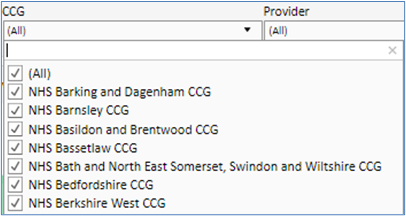
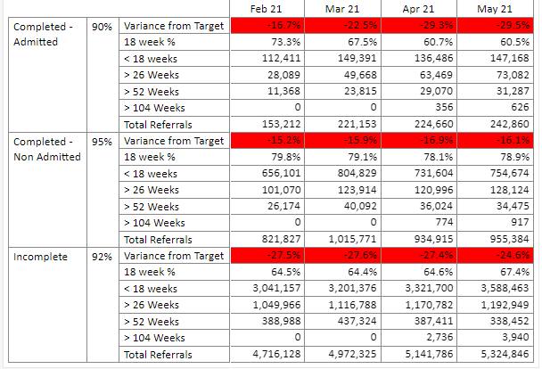
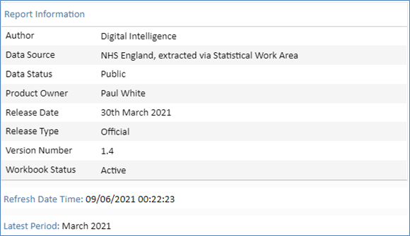
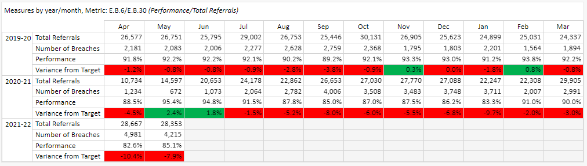
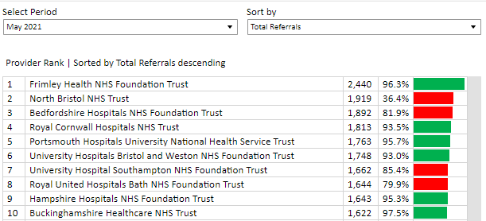

Enterprise Reporting Catalogue – Alpha
SCW Digital Intelligence Team
Publication date - 23 July 2021
Introduction
As part of our continuing drive to produce high quality analytical products, “by the NHS, for the NHS”, SCW’s Digital Intelligence Team design & deliver fully scalable enterprise solutions based on robust data models. Digital Intelligence are specialists in using complex data sources and visualisation technology that allows the end user to delve deeper into the insights the analysis provides.
Working collaboratively with product owners and local subject matter experts along with their customers, we have developed a number of digital portfolios encompassing numerous reporting solutions.
Benefits of enterprise reporting solutions:
Standardised layouts across enterprise reporting suite:
Consistent look and feel
Minimises time to familiarise usage across product range
User interfaces and functionality standard
Single version of information
Continuous improvement cycles based on customer feedback
Each reporting portfolio contains supporting documentation including release notes, quick start guide allowing the users to find out more about any updates and improvements made based on the feedback received.
Access to the Insights Portal and digital portfolio pages are authorised upon request. Note: Only users with prior permission to access to the portfolio pages will be able to view them. To request access, please refer to the Insights Access page at the end of the catalogue.
Common Features
SCW’s Enterprise Reports are designed to optimise the delivery of clear, easy to understand key top line data, whilst allowing selection and organisation by all available options. From a single page, users can view a region wide overview, then drill down to a single provider for one treatment pathway. Every selection is dynamically updated in real time so the latest information is always at your fingertips:
Simple to use navigation menu bars embedded at the top of each report page. For example:
Dynamic selection drop downs, enabling granular filtering by applicable elements: Region, Locality, STP, CCG, Provider and Treatment Functions.
Summary tables showing most recent for selected elements / treatment functions.

Dynamically updating time series charts, showing most recent data for selected elements / treatment functions.

Detailed breakdown of performance metrics over time. Data are dynamically updated to show most recent data for selected elements / treatment functions.
The notes page contains technical information about the report, including:

Key information is also available in a popup “Metadata” ToolTip icon at the bottom corner of the screen (currently only available in the Performance Reporting portfolio).

Time-series summary data with colour coded performance indicators reflecting compliance with targets. The plot dynamically updates to reflect the selected metrics from the drop down menus, offering a completely granular insight into the data provided.
Time series data table, dynamically updated by user selected metrics. Data variance from target is colour-coded to indicate compliance.
Ranked data table with user selected ordering. Rankings shown reflect user selected metrics from the drop down lists on the page.
Geographic mapping of data sets, displayed by CCG or STP boundary levels. Data is dynamically updated to reflect user-selected metrics and colour-coded to reflect compliance with metric target. A scatter plot of summary data displayed underneath the map.